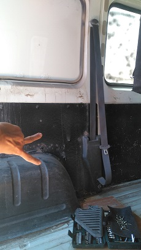
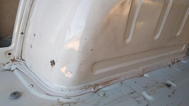

Proceso de desmontaje y limpieza
- Primero desmontamos asientos y cinturones de seguridad.
- Se desmontan también el techo y los paneles laterales.
- Limpieza general de la porqueria: tierra, mayoritariamente.


Tras este proceso se procede al tratamiento de los oxidos.